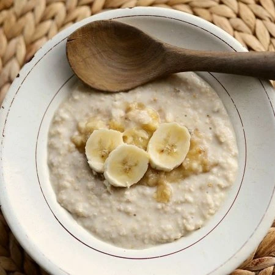

Caramelized banana oatmeal

Ingidients
- 50g oats
- 100g oat milk
- 2 teaspoon coconut oil
- 100g water
- 1/2 mashed banana
- 1/4 tsp Cinnamon
- Toppings (optional)
- Caramelized banana
- Peanut butter
- Honey
- Honey
Preperation time
15 minutes
Instructions
Cinnamon - Cook on the stove until thick and creamy consistency. Add a non dairy milk or water and the oats to a pot and cook until thick and creamy consistency. Add 1/2 tablespoon of a coconut oil. Slice bananas as you prefer and cook on each side for about 4 minutes until golden brown. Top witch honey, nuts (such as cashew, walnuts, almonds) or with the peanut butter. Enjoy.